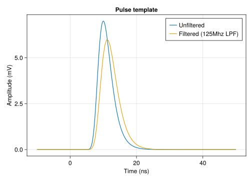
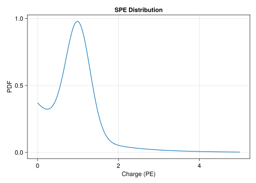
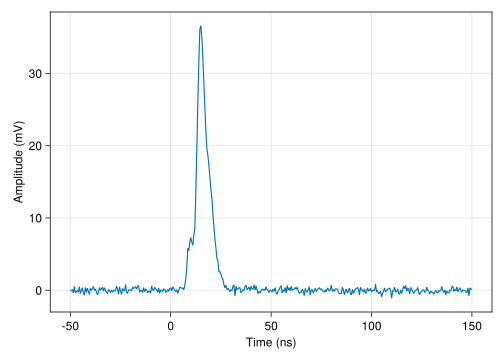
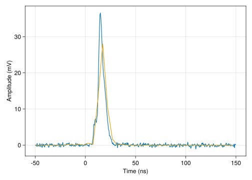
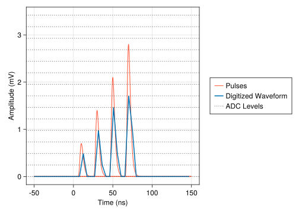
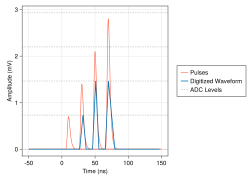
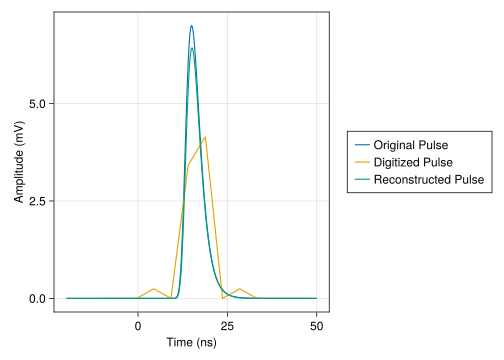
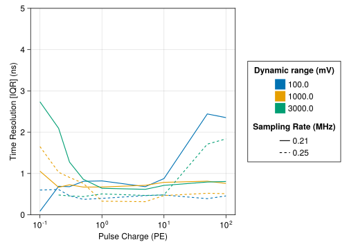
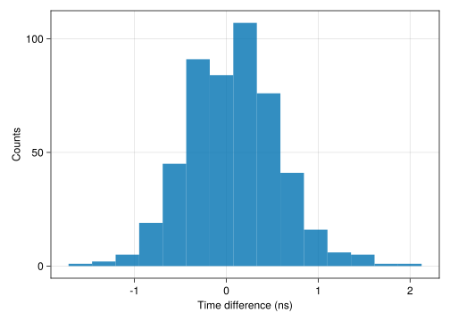
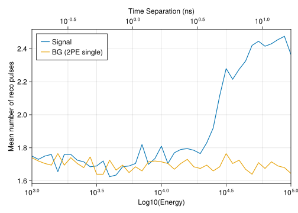

a=10.00, b=1.94, FWHM=6.0nsP-ONE PMT Properties & Simulation
This document summarizes the simulation of the R14374 PMT and the digitization electronics.
PMT Simulation
Simulation Code
The PMT simulation is implemented in the PMTSimulation.jl julia package.
Pulse Shape
The PMT pulse shape is modelled by a gumbel distribution: \[ p(t) = \frac{1}{b} \exp \left (- \frac{(x-a)}{b} - e^{-\frac{(x-a)}{b}} \right ) \] with parameters:

Figure 1 shows the pulse shape and the filtered pulse after applying a 125Mhz low pass filter (LPF). The (unshifted) Gumbel distribution has a non-zero contribution for \(x<0\), thus the distribution is shifted by an arbitrary location parameter. This shift is later compensated in the transit time.
Transit Time
SPE Distribution
The SPE distribution is modelled as a mixture of a truncated normal distribution and an exponential distribution: \[ p(q) = a \cdot \frac{1}{\sqrt{2\pi\sigma^2}} \exp \left ( -\frac{(q-\mu)^2}{\sigma^2} \right ) + (1-a)\cdot \frac{1}{\theta}\exp \left( - \frac{q}{\theta}\right)\]
Code
lines(0:0.01:5, x -> pdf(spe_d, x),
axis=(; title="SPE Distribution", xlabel="Charge (PE)", ylabel="PDF"))
PMT Pulses
The PMT pulse amplitude (in units of PE) is drawn from the SPE distribution:
Code
charges = rand(spe_d, 1000)
hist(charges, axis=(; xlabel="Charge (PE)", ylabel="Counts"))
Waveforms
Pulse Series
Pulse series are a collection of pulses at timestamps \(t_1, \ldots, t_n\) with charges \(q_1, \ldots, q_n\). Evaluating the pulse series corresponds to the analog output signal of the PMT:
Code
pulse_series = PulseSeries([0, 5, 10], [1, 5, 1], pmt_config.pulse_model)
eval_grid = -5:0.05:25
eval_ps = evaluate_pulse_series(eval_grid, pulse_series)
fig, ax = lines(eval_grid, eval_ps, axis=(; xlabel="Time (ns)", ylabel="Amplitude (mV)"))
for (t, q) in pulse_series
lines!(ax, eval_grid, x -> q * evaluate_pulse_template(pmt_config.pulse_model, t, x))
end
fig
Raw Waveforms
Raw waveforms are created by evaluating the pulse series with a given sampling frequency and adding gaussian white noise on top:
Code
waveform = Waveform(pulse_series, pmt_config.sampling_freq, pmt_config.noise_amp)
lines(waveform.timestamps, waveform.values, axis=(; xlabel="Time (ns)", ylabel="Amplitude (mV)"))
Waveform digitization
Waveforms are digitized in multiple steps:
- Applying a filter (125MHz LPF) to the waveform
- Resampling the waveform with a given digitizer frequency
- Quantizing the waveform values with given digitizer levels
Code
digi_wg = digitize_waveform(
waveform,
pmt_config.sampling_freq,
pmt_config.adc_freq,
pmt_config.lp_filter,
yrange=pmt_config.adc_dyn_range,
yres_bits=pmt_config.adc_bits)
fig, ax = lines(
waveform.timestamps, waveform.values,
axis=(; xlabel="Time (ns)", ylabel="Amplitude (mV)"), label="Raw Waveform")
lines!(ax, digi_wg.timestamps, digi_wg.values, label="Digitized Waveform")
fig
Dynamic range
We can test the effect of the dynamic range on small pulses. Figure 7 shows the digitized waveform for pulses with charges [0.1, 0.2, 0.3, 0.4] PE, with 12bits in a range of (0, 1)V. Figure 8 shows the waveform with 12bits in a range of (0, 3)V.
Code
pulse_series = PulseSeries([0, 20, 40, 60], [0.1, 0.2, 0.3, 0.4], pmt_config.pulse_model)
waveform = Waveform(pulse_series, pmt_config.sampling_freq, pmt_config.noise_amp)
fig = Figure()
ax = Axis(fig[1, 1], xlabel="Time (ns)", ylabel="Amplitude (mV)")
eval_grid = -50:0.05:150
p1 = nothing
for (t, q) in pulse_series
p1 = lines!(ax, eval_grid, x -> q * evaluate_pulse_template(pmt_config.pulse_model, t, x), color=:tomato)
end
digi_wg = digitize_waveform(
waveform,
pmt_config.sampling_freq,
pmt_config.adc_freq,
pmt_config.lp_filter,
yrange=pmt_config.adc_dyn_range,
yres_bits=pmt_config.adc_bits)
p2 = lines!(ax, digi_wg.timestamps, digi_wg.values, label="Digitized Waveform", linewidth=2)
bins = adc_bins(pmt_config.adc_dyn_range, pmt_config.adc_bits)
p3 = hlines!(ax, bins[1:15], color=(:black, 0.5), linestyle=:dot, label="ADC Levels")
Legend(fig[1, 2], [p1, p2, p3], ["Pulses", "Digitized Waveform", "ADC Levels"])
fig
Note
Note that the dynamic range is typically defined as ratio between the smallest and largest value which can be assumed by the signal.
Code
println(format("DNR for 12 bits in ({:.0f}, {:.0f}): {:.2f}", pmt_config.adc_dyn_range..., 10 * log10(bins[2] / bins[end])))DNR for 12 bits in (0, 1000): -36.12Code
fig = Figure()
ax = Axis(fig[1, 1], xlabel="Time (ns)", ylabel="Amplitude (mV)")
eval_grid = -50:0.05:150
p1 = nothing
for (t, q) in pulse_series
p1 = lines!(ax, eval_grid, x -> q * evaluate_pulse_template(pmt_config.pulse_model, t, x), color=:tomato)
end
digi_wg = digitize_waveform(
waveform,
pmt_config.sampling_freq,
pmt_config.adc_freq,
pmt_config.lp_filter,
yrange=(0.0, 3000.0),
yres_bits=pmt_config.adc_bits)
p2 = lines!(ax, digi_wg.timestamps, digi_wg.values, label="Digitized Waveform", linewidth=2)
bins = adc_bins((0.0, 3000.0), pmt_config.adc_bits)
p3 = hlines!(ax, bins[1:5], color=(:black, 0.5), linestyle=:dot, label="ADC Levels")
Legend(fig[1, 2], [p1, p2, p3], ["Pulses", "Digitized Waveform", "ADC Levels"])
fig
Unfolding
Pulses are unfolded from digitized waveforms using non-negative least squares (NNLS). Pulse templates (PMT pulses after they have passed through the digitization chain) are placed on a fine time grid, with resolution smaller than the expected time resolution. The resulting summed signal is fitted to the digitized waveform, yielding a charge (scaling factor) for each pulse template which best matches the waveform. Pulses with small charges (\(<0.1\) PE) are cut out. Figure 9 shows an example of such an unfolding.
Code
ps = PulseSeries([5.0], [1.0], pmt_config.pulse_model)
digi_wf = digitize_waveform(ps, pmt_config.sampling_freq, pmt_config.adc_freq, pmt_config.noise_amp, pmt_config.lp_filter, time_range=[-10, 50], yrange=(0.0, 1000.0),)
unfolded = unfold_waveform(digi_wf, pmt_config.pulse_model_filt, pmt_config.unf_pulse_res, 0.3, :nnls)
reco = PulseSeries(unfolded.times, unfolded.charges, pmt_config.pulse_model)
ts = -20:0.1:50
fig, ax = lines(ts, evaluate_pulse_series(ts, ps), label="Original Pulse",
axis=(; xlabel="Time (ns)", ylabel="Amplitude (mV)"))
lines!(ax, digi_wf.timestamps, digi_wf.values, label="Digitized Pulse")
lines!(ax, ts, evaluate_pulse_series(ts, reco), label="Reconstructed Pulse")
Legend(fig[1, 2], ax)
fig
Code
pulse_charges = [0.1, 0.2, 0.3, 0.5, 1, 5, 10, 50, 100]
dyn_ranges_end = (100.0, 1000.0, 3000.0) # mV
data_unf_res = []
for (dr_end, c) in product(dyn_ranges_end, pulse_charges)
pulse_times = rand(Uniform(0, 10), 500)
noise_amp = find_noise_scale(0.6, (0, dr_end), adc_bits)
for t in pulse_times
ps = PulseSeries([t], [c], pmt_config.pulse_model)
digi_wf = digitize_waveform(ps, pmt_config.sampling_freq, pmt_config.adc_freq, noise_amp, pmt_config.lp_filter, time_range=[-10, 50], yrange=(0.0, dr_end),)
unfolded = unfold_waveform(digi_wf, pmt_config.pulse_model_filt, pmt_config.unf_pulse_res, 0.1, :nnls)
if length(unfolded) > 0
amax = sortperm(unfolded.charges)[end]
push!(data_unf_res, (dr_end=dr_end, charge=c, time=t, reco_time=unfolded.times[amax], reco_charge=sum(unfolded.charges)))
end
end
end
data_unf_res_low_noise = []
for (dr_end, c) in product(dyn_ranges_end, pulse_charges)
pulse_times = rand(Uniform(0, 10), 100)
noise_amp = find_noise_scale(0.6, (0, dr_end), adc_bits)
for t in pulse_times
ps = PulseSeries([t], [c], pmt_config_high_sampl.pulse_model)
digi_wf = digitize_waveform(ps, pmt_config_high_sampl.sampling_freq, pmt_config_high_sampl.adc_freq, noise_amp, pmt_config_high_sampl.lp_filter, time_range=[-10, 50], yrange=(0.0, dr_end),)
unfolded = unfold_waveform(digi_wf, pmt_config_high_sampl.pulse_model_filt, pmt_config_high_sampl.unf_pulse_res, 0.1, :nnls)
if length(unfolded) > 0
amax = sortperm(unfolded.charges)[end]
push!(data_unf_res_low_noise, (dr_end=dr_end, charge=c, time=t, reco_time=unfolded.times[amax], reco_charge=sum(unfolded.charges)))
end
end
end
data_unf_res_low_noise = DataFrame(data_unf_res_low_noise)
data_unf_res_low_noise[:, :dt] = data_unf_res_low_noise[:, :reco_time] - data_unf_res_low_noise[:, :time]
time_res_low_noise = combine(groupby(data_unf_res_low_noise, [:charge, :dr_end]), :dt => mean, :dt => std, :dt => iqr)
data_unf_res = DataFrame(data_unf_res)
data_unf_res[:, :dt] = data_unf_res[:, :reco_time] - data_unf_res[:, :time]
time_res = combine(groupby(data_unf_res, [:charge, :dr_end]), :dt => mean, :dt => std, :dt => iqr)Timing Study
To test the impact of the digitization chain on the timing resolution, we can conduct a study with pulses for different charges and different settings of the dynamic range and the noise rate. Figure 10 summarizes the results. Figure 11 shows the time difference distribution for one simulation set. Note, that this simulation does not include the SPE distribution. The noise level (in units of ADC counts) assumed in the following studies is:
Noise level: 0.600 counts Code
colors = Makie.wong_colors()
fig = Figure()
ax = Axis(fig[1, 1], xscale=log10, xlabel="Pulse Charge (PE)", ylabel="Time Resolution [IQR] (ns)")
for (i, (grpkey, grp)) in enumerate(pairs(groupby(time_res, :dr_end)))
lines!(ax, grp[:, :charge], grp[:, :dt_iqr], label=string(grpkey[1]), color=colors[i])
end
for (i, (grpkey, grp)) in enumerate(pairs(groupby(time_res_low_noise, :dr_end)))
lines!(ax, grp[:, :charge], grp[:, :dt_iqr], linestyle=:dash, color=colors[i])
end
group_color = [PolyElement(color=color, strokecolor=:transparent)
for color in colors[1:3]]
group_linestyles = [LineElement(color=:black, linestyle=:solid),
LineElement(color=:black, linestyle=:dash)]
ylims!(ax, 0, 5)
dyn_range_labels = getproperty.(keys(groupby(time_res, :dr_end)), :dr_end)
Legend(
fig[1, 2],
[group_color, group_linestyles],
[string.(dyn_range_labels), [format("{:.2f}", pmt_config.adc_freq), format("{:.2f}", pmt_config_high_sampl.adc_freq)]],
["Dynamic range (mV)", "Sampling Rate (MHz)"])
fig

Double Pulse Study
In order to identify \(\nu_\tau\) below 100TeV, analyzing the waveform structure for double pulse signatures might be beneficial. Here, we study the ability to recognize to distinct SPE pulses separated by a certain distance in time. As a metric we use the mean number of unfolded pulses, evaluated for double pulses vs. single, 2PE pulses. Here, the SPE distribution is included. The pulse separation time \(\Delta t\) can be converted into a \(\nu_\tau\) energy equivalent by using: \[ \Delta t = \frac{1}{c} \cdot \frac{50~\mathrm{m} \cdot E}{\mathrm{PeV}}\] which estimates the expected time difference between interaction vertex and decay vertex for a \(\tau\) of energy \(E\). This estimation is valid for \(\tau\) directions aligned with the line of sight of an individual PMT. Figure 12 shows the result of this study. At energies of 20TeV-30TeV, the mean number of unfolded pulses is significantly higher than for a single pulse with 2PE charge.
Note
Note that the metric used here is not necessarily the optimal metric in identifying double pulses, but should be understood as a conservative estimate. Also note that this study does not average over different alignments of the tau relative to the PMT line of sight.
Code
time_sep_per_GeV = (50 / 0.3) / 1E6
tau_log_e = 3:0.05:5
time_sep = time_sep_per_GeV .* 10 .^ tau_log_e
pulse_times = rand(Uniform(0, 10), 200)
rdt = []
rdc = []
sucess = []
results = []
for tle in tau_log_e
time_sep = 10^tle * time_sep_per_GeV
for t in pulse_times
c = rand(spe_d)
ps = PulseSeries([t, t + time_sep], rand(spe_d, 2), pmt_config.pulse_model)
digi_wf = digitize_waveform(ps, pmt_config.sampling_freq, pmt_config.adc_freq, pmt_config.noise_amp, pmt_config.lp_filter, time_range=[-10, 50])
unfolded_sig = unfold_waveform(digi_wf, pmt_config.pulse_model_filt, pmt_config.unf_pulse_res, 0.3, :nnls)
ps = PulseSeries([t, t], rand(spe_d, 2), pmt_config.pulse_model)
digi_wf = digitize_waveform(ps, pmt_config.sampling_freq, pmt_config.adc_freq, pmt_config.noise_amp, pmt_config.lp_filter, time_range=[-10, 50])
unfolded_bg = unfold_waveform(digi_wf, pmt_config.pulse_model_filt, pmt_config.unf_pulse_res, 0.3, :nnls)
push!(results, (np_sig=length(unfolded_sig), np_bg=length(unfolded_bg), tle=tle, time_sep=time_sep))
end
end
results = DataFrame(results)
results_mean = combine(groupby(results, :tle), [:np_sig, :np_bg] .=> mean, :time_sep => first)
fig = Figure()
ax = Axis(fig[1, 1], xlabel="Log10(Energy)", ylabel="Mean number of reco pulses",
xscale=log10)
lines!(ax, 10 .^ results_mean[:, :tle], results_mean[:, :np_sig_mean], label="Signal")
lines!(ax, 10 .^ results_mean[:, :tle], results_mean[:, :np_bg_mean], label="BG (2PE single)")
axislegend(ax, position=:lt)
ax2 = Axis(
fig[1, 1],
limits=(minimum(results_mean[:, :time_sep_first]), maximum(results_mean[:, :time_sep_first]), 0, 1),
xaxisposition=:top,
xlabel="Time Separation (ns)",
xscale=log10)
hidespines!(ax2)
hideydecorations!(ax2)
xlims!(ax, 10^tau_log_e[1], 10^tau_log_e[end])
fig
Citation
BibTeX citation:
@online{haack,
author = {Christian Haack},
title = {P-ONE {PMT} {Properties} \& {Simulation}},
langid = {en}
}
For attribution, please cite this work as:
Christian Haack. n.d. P-ONE PMT Properties &
Simulation.